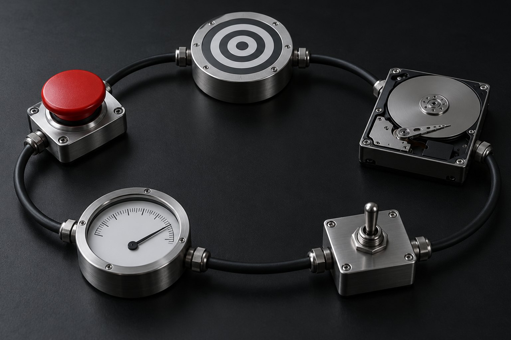
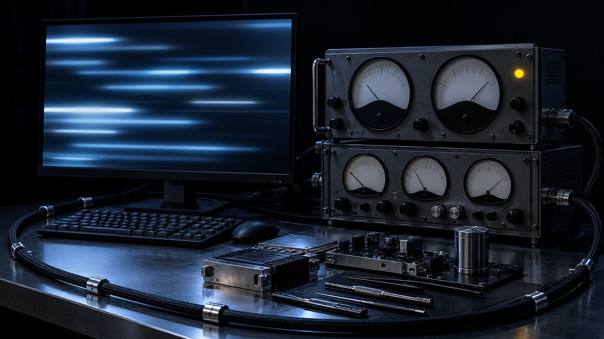
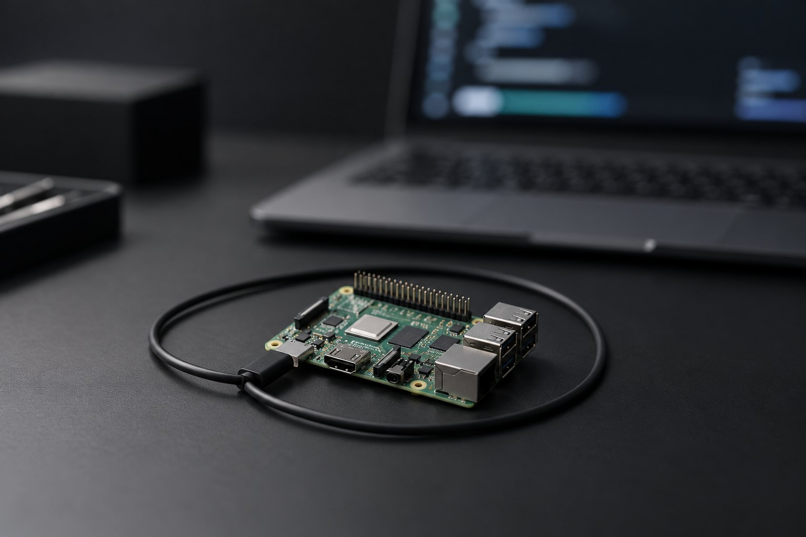

Formação LOOP-R Engenharia · curso 0 de 6 · 8 aulas
Base: a anatomia de um loop de agente que trabalha, se confere e sabe parar
Objetivo, estado, ação, verificação e parada. O harness em volta do modelo, os motores de loop de hoje e o limite de cada um, o LOOP-R com seus nove agentes, critério de pronto de 0 a 4 e tetos. Cada aula aponta o curso da formação que aprofunda o assunto.

- 8aulas
- 6cursos na formação
- 5peças de todo loop
- 2vídeos
Os 6 cursos da formação
Este é o curso 0. Cada aula daqui aponta para o curso que é dono do assunto. Ordem sugerida: 0 → 1 → 2 → 3 → 4 → 5.
 Curso 0 · você está aquiBase: anatomia do loopAs cinco peças, o harness, os motores de loop, o LOOP-R, critério de pronto de 0 a 4 e tetos.Abrir o curso
Curso 0 · você está aquiBase: anatomia do loopAs cinco peças, o harness, os motores de loop, o LOOP-R, critério de pronto de 0 a 4 e tetos.Abrir o curso - Curso 1Verificação e evalsAvaliador separado e cético, testes congelados, reward hacking, conjunto de ouro e juiz calibrado.Abrir o curso

Curso 2Execução longaO kit de sete arquivos, goal.md nível 3+, contexto em faixas, handoff, loop headless e medição.Abrir o curso Curso 3Multiagente e orquestraçãoQuando não usar, subagentes, gerador × avaliador, worktrees, filas e o time Claude + Codex.Abrir o curso
Curso 3Multiagente e orquestraçãoQuando não usar, subagentes, gerador × avaliador, worktrees, filas e o time Claude + Codex.Abrir o curso - Curso 4Segurança do loop autônomoTríade letal, Regra de Dois, injeção pelo conteúdo lido, hooks de guarda e sandbox.Abrir o curso
 Curso 5O loop que aprendeHipótese com número, experimento, promoção e rollback, lições e o risco de otimizar contra o medidor.Abrir o curso
Curso 5O loop que aprendeHipótese com número, experimento, promoção e rollback, lições e o risco de otimizar contra o medidor.Abrir o curso
As aulas
Do conceito ao primeiro loop rodando: as peças, o que fica em volta do modelo, os motores, o LOOP-R, estado, critério, tetos e a prática final.
- Aula 1 · 15 minO loop em 5 peças: objetivo, estado, ação, verificação, paradaTodo loop de agente que funciona tem as mesmas cinco peças, do /goal ao laço de shell. Quando um loop falha, quase sempre falta uma: não diz onde quer chegar, esquece onde estava, se aprova sozinho ou não sabe parar. Aqui você aprende a enxergar as cinco e roda um loop de brinquedo, sem modelo, que as mostra.
- Aula 2 · 15 minHarness: o que fica em volta do modeloO modelo sozinho só prevê texto: não lembra, não enxerga seus arquivos, não age e não confere. Quem faz o trabalho no Claude Code e no Codex é o harness, o programa em volta do modelo. Quando o agente falha, a pergunta útil quase nunca é "tente de novo": é qual peça do harness está faltando. Nesta aula você faz o inventário do seu.
 Aula 3 · 18 minOs motores de loop hoje: /goal, /loop, Ralph, routines, codex execHá cinco jeitos comuns de pôr um agente em loop, e eles respondem de forma diferente a duas perguntas: o que dispara o próximo turno e quem decide parar. Escolher errado custa caro: um /loop esperando uma condição que nunca vem, um /goal que acredita no que o agente disse. Aqui fica só o que a documentação oficial confirma, lida em 19/10/2026.
Aula 3 · 18 minOs motores de loop hoje: /goal, /loop, Ralph, routines, codex execHá cinco jeitos comuns de pôr um agente em loop, e eles respondem de forma diferente a duas perguntas: o que dispara o próximo turno e quem decide parar. Escolher errado custa caro: um /loop esperando uma condição que nunca vem, um /goal que acredita no que o agente disse. Aqui fica só o que a documentação oficial confirma, lida em 19/10/2026.- Aula 4 · 18 minLOOP-R: as cinco letras e os nove agentesUm agente que avalia o próprio trabalho tende a se aprovar. O LOOP-R, framework aberto do INEMA que dá nome a esta formação, resolve isso separando funções: nove agentes, cada um com o que lê, o que escreve, o que decide e o que nunca faz. As cinco letras dão a ordem do método. Aqui você vê o desenho; a parte de promover e voltar versões é do curso 5.
- Aula 5 · 16 minEstado fora do modelo: arquivos e git como memóriaNum loop longo, o contexto do modelo vai ser compactado, resetado ou trocado por uma sessão nova. O que só existia na conversa some ou volta como resumo, misturando fato e palpite. A saída: sessão descartável, estado em arquivos e no git, e todo ciclo começa relendo. Você monta um ciclo assim e o interrompe de propósito.
- Aula 6 · 16 minCritério de pronto na escala 0–4Um loop termina quando o critério de pronto diz que terminou. Se o critério é vago, o loop não termina ou termina cedo; se dá para cumprir por atalho, o agente acha o atalho: apaga o teste que falhava, gera página vazia. A escala de 0 a 4 do kit execucao-longa dá nome a cada degrau e mostra o mínimo aceito: nível 3, comando com trava.
- Aula 7 · 17 minTetos e parada: turnos, tempo, memória, estagnação e custoCritério bom garante que o loop não sai antes da hora; não garante que ele saia. Objetivo impossível, agente preso no mesmo erro, processo que come a memória da máquina: só um teto para. Nesta aula você conhece os cinco tetos, vê cada um parar um processo de verdade e treina a decisão mais difícil: quando o agente pede só mais uma tentativa.

Aula 8 · 20 minSeu primeiro loop: objetivo pequeno com critério nível 3Hora de juntar as peças num loop de verdade, pequeno de propósito: uma função de contar palavras, seis testes congelados com hash e uma condição de /goal nível 3 com teto de turnos. Pequeno o bastante para terminar em minutos; completo o bastante para ter as cinco peças. No fim, o mapa da formação e o seu plano com datas.
Para quem é
- 1Quem já usa Claude Code ou Codex no terminal e quer deixar o agente trabalhar sozinho por mais de um turno.
- 2Quem já viu o agente dizer "pronto" sem prova, ou girar no mesmo erro até acabar a cota.
- 3Quem vai fazer a Formação LOOP-R Engenharia e precisa do vocabulário comum dos seis cursos.
O que você sai fazendo
- 1Apontar as cinco peças em qualquer loop e dizer qual está faltando.
- 2Escolher entre /goal, /loop, Ralph, routines e codex exec pelo que cada um faz e não faz.
- 3Classificar um critério de pronto de 0 a 4 e reescrever o vago até o nível 3.
- 4Rodar seu primeiro loop com testes congelados, teto de turnos e prova na saída.
Antes de começar
- 1Linux ou macOS com bash, git e Python 3 (pytest para a aula 8).
- 2Claude Code ou Codex instalado e entrando pela sua assinatura. As práticas das aulas 1, 5 e 7 não gastam cota.
- 3Nenhum curso anterior: este é o ponto de entrada da formação.